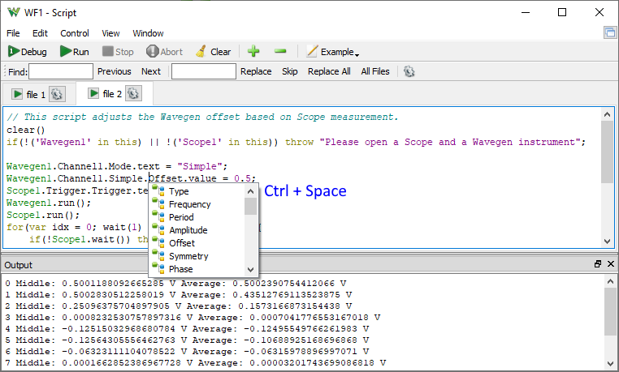
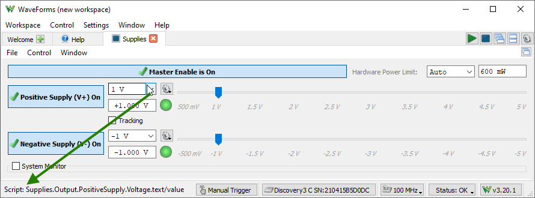

The Script window allows execution of WaveForms scripts. The scripting language is JavaScript, based on the ECMAScript, ECMA-262 standard.
From the script objects behind the user interface can be accessed. This allows configuration using the interface and automating parts of it with script.
The Script tool is intended to automate some operations to extend the GUI features. There is no need to setup all the interface from Script as the Script is saved together with other instruments in workspace. What can be done in the GUI, is easier to do there, like: setup channels, naming, static configuration. Then, use the Script to adjust parameters that need to be changed, such as changing PWM duty based on some scope measurements.

The script access to various properties and functions is shown as status tool tip.
See Menu in Common Interfaces.
The control toolbar allows you to debug and execute the script.
The output window contains the print() messages and error log. When this window is closed the prints are directed to the standard output.
The instrument's object can be accessed from the script and has the most relevant child objects and parameters shown in the table below.
The Ctrl+Space (or Ctrl+Shift+Space under MacOS) can be used for code completion, to reveal child objects, functions and properties.
The instrument parameters are stored in objects with the following properties:
wait(seconds) |
Waits the specified time expressed in seconds. With a negative value, it waits until stopped. Returns false when the script is stopped; otherwise returns true. |
print(arg0,arg1,...) | Prints the arguments to the Output window or to the standard output when this is closed. |
stdout(arg0,arg1,...) | Prints the arguments to the standard output. |
clear() | Clears the Output window content. |
Device | |
.isConnected() | Returns true when the application is connected to a device, otherwise false. |
.name | Gets the device name. |
.SN | Gets the device serial number. |
.triggerPC() | Executes manual trigger. |
open(instr1, instr2...) | Opens the specified instruments if these do not exists, like: open("Scope", "Wavegen") |
Instrument# | common instrument object, Instrument refers to Instrument1 like Scope to Scope1 |
.single() | Starts single acquisition. |
.run() | Starts repeated acquisitions or scan mode. |
.stop() | Stops the instrument. |
.wait() | Waits for the capture to be completed and returns true. Returns false when the Script or instrument is stopped, |
.config() | Applies configuration immediately. |
.window | Gets the instrument window object. |
.Export(file) | |
.Export(szFile, szView = "", fComments = true, fHeader = true, fLabel = true, fHeaderAsComment = false, szNotes = "") | |
| Exports a view or instrument data or screenshot to the given file. The file format is identified based on file name extension: csv, txt, tdms, bmp, png. For view name expects like: Acquisition, XY1, FFT; Wavegen: Channel1; without name the instrument is saved. The comment, header, and labels boolean arguments enable or disable saving such information. |
.State | |
.text | Gets the instrument state: Disabled, Ready, Done, Stop, Busy, Error, Config, Armed, Trig'd, Running, Auto, Scan, Wait. |
.running() | Returns true when the instrument is in active state, >= Config. |
.Rate.value | Gets the refresh rate of the instrument. |
.Time | |
.Position.value | |
.Base.value | |
.Base.real | Gets the full timespan of the capture |
.Samples.value | |
.Samples.real | Gets the number of samples in capture |
.Rate.value | |
.Rate.real | Gets the actual sample rate of the capture |
.taken | Gets the capture date time |
.taken3 | Gets precise capture time: seconds since epoch, ticks and number of ticks in a second |
.Eye | Eye Pattern |
.measure() | Returns the measurement value like: Rate, Period, Cross, JitterP2P, JitterRMS, Width, Height, Opening, SNF, Zero, One, ZeroDev, OneDev, Amplitude, T1, T2, Rise, Fall, Window, Time, Crossings, Points |
Scope# | |
.measure(name) | Returns global measurements value, like custom Phase measurement. |
.Measurements | Provides access to the Measurement view. |
.name | .value .count .minimum .maximum .median .mean |
.Trigger | |
.Trigger.text | Sets or gets the acquisition mode: Normal, Auto, None. |
.Type.text | Sets or gets the trigger type: Edge, Pulse, Transition. |
.Condition.text | Sets or gets the condition: Rising, Falling or Positive, Negative. |
.Source.text | Sets or gets the trigger source: Channel 1, Channel 2, Wavegen 1, etc. |
.Level.value | Sets or gets the trigger level. |
.Hysteresis.value | Sets or gets the trigger hysteresis. |
.LCondition.value | Sets or gets the trigger length condition. |
.Length.value | Sets or gets the trigger length. |
.HoldOff.value | Sets or gets the trigger hold-off. |
.Filter.text | Sets or gets the trigger filter sample type to use when looking for trigger condition: Decimate, Average. |
.Time | |
.Mode.text | Sets or gets the run-scan mode: Repeated, Screen, Shift, Record. |
.BufferSize.value | Sets or gets the PC buffer size. |
.Buffer.value | Sets or gets the selected PC buffer index. |
.Digital.checked | Sets or gets the mixed mode using digital channels. |
.DigitalChannels | Digital channels, same as Analyzer#.Channels. |
.DigitalTrigger | Same as Analyzer#.Trigger. |
.channel# | The following properties are available for Math and Ref channels as well: |
.checked | Sets or gets the channel visibility. |
.data | Gets the data array with the channel samples. |
.TimeOfIndex(index) | Returns the time value in seconds of the specified data index. |
.IndexOfTime(time) | Returns the data index of the specified time value in seconds. |
.Sample(index) | Returns the sample at specified index. |
.SampleAt(time) | Returns the sample at specified time position expressed in seconds. |
.visibledata | Gets the data array of the visible samples with the current time options. This property is useful for measurements. |
.TimeOfVisibleIndex(index) | Returns the time value in seconds of the specified visible data index. |
.VisibleIndexOfData(time) | Returns the visible data index of the specified time value in seconds. |
.VisibleSample(index) | Returns the sample at specified visible index. |
.measure(name) | Returns channel measurement value, such as Minimum, Maximum, Average, Peak2Peak, Low, High, Amplitude, Middle, etc. |
.Offset.value | |
.Offset.real | Gets the actual offset of the capture |
.Range.value | |
.Offset.real | Gets the actual range of the capture |
.histogram | Gets the histogram array in percentage. |
.HistogramIndex2Data(index) | |
| Returns the “voltage” value corresponding to the histogram array index. |
.Channel# | Real channels |
.Attenuation.value | |
.Noise.checked | |
.SampleMode.text | Sets or gets the sampling mode: Decimate, Average, Min/Max. |
.Ref# | Reference channels |
.setData(array, rate) | Set data and specify sample rate in Hertz. |
.clone(channel) | Clone with the respective channel. |
.TimeRef | Reference channel time. |
.Units.text | |
.Noise.checked | |
.Math# | Math channels |
.Operation.text | Sets or gets the operation for simple mode: +, -. |
.A | Sets or gets the Channel A for simple mode. |
.B | Sets or gets the Channel B for simple mode. |
.Mode.text | Sets or gets the math mode: Simple, Custom, Filter. |
.Function.text | Sets or gets the custom function code. |
.Units.text | |
.customFilter | Sets or gets the custom filter array. |
.Histogram | |
.Autoscale.checked | |
.Top.value | Sets or gets the top of the scale to use when auto-scale is unchecked. |
Wavegen# | |
.Custom | |
.set(name,array) | Set custom waveform data (normalized to +-1) identified by name. |
.Play | |
.set(name,array) | Set play waveform data (normalized to +-1) identified by name. |
.Synchronization.text | Sets or gets the synchronization mode: No synchronization, Independent, Synchronized, Auto synchronized. |
.States | Common synchronization states settings. |
.Trigger.text | |
.Wait.value | |
.Run.value | |
.Repeat.value | |
.RepeatTrigger.checked | |
.Channel# | |
.enable | Enables or disables the channel |
.Mode.text | Sets or gets the configuration mode: Simple, Basic, etc. |
.Options | |
.IdleOutput.text | Sets or gets the idle output value: Offset, Initial, Disabled. |
.States | Channel states configuration. |
.Simple | |
.Type.text | Sets or gets the predefined or custom waveform name: Sine, Square, etc. |
.Frequency, Offset, Amplitude, Symmetry, Phase | |
.value | |
.Basic | |
.Type.text | Sets or gets the predefined or custom waveform name. |
.Frequency, Offset, Amplitude, Symmetry, Phase | |
.value | |
.Min.value | |
.Max.value | |
.Frequency, Offset, Amplitude, Symmetry, Phase | |
.value | |
.Sweep | |
.Type.text | Sets or gets the predefined or custom waveform name. |
.Offset, Symmetry, Phase | |
.value | |
.Frequency | |
.checked | Sets or gets the sweeping enable. |
.Start.value | Sets or gets the start frequency. |
.Stop.value | Sets or gets the stop frequency. |
.Time.value | Sets or gets the sweep time. |
.Amplitude | |
.checked | Sets or gets the damping enable. |
.Start.value | Sets or gets the start amplitude. |
.Stop.value | Sets or gets the stop amplitude. |
.Time.value | Sets or gets the damp time. |
Logic# | |
.Trigger | Trigger configuration. |
.Trigger.text | Sets or gets the acquisition mode: Normal, Auto, None. |
.Clock.text | Sets or gets the clock source: Internal, External. |
.Source.text | Sets or gets the trigger source. |
.Time | Time configuration. |
.Mode.text | Sets or gets the run mode: Repeated, Screen, Shift, Record. |
.BufferSize.value | Sets or gets the PC buffer size. |
.Buffer.value | Sets or gets the selected PC buffer index. |
.AddTab(name, data array, frequency) | |
.Channels | |
.channel | Channel like: DIO1, Bus1, SPI1. |
.name | Sets or gets the channel name. |
.data | Gets the text array. |
.events | Gets the events text array. |
.eventStamps | Gets the time stamp array. |
.measure(name) | Returns channel measurement value, such as: Cycles, PosDuty, PosWidth |
.DIO# | |
.DIO.value | Sets or gets the digital I/O pin index. |
.Trigger.text | Sets or gets the trigger: Ignore, Rise, Fall, Edge, High, Low. |
.Bus# | |
.Enable.DIO.value | Sets or gets the enable pin. |
.Clock.DIO.value | Sets or gets the clock pin. |
.Active.text | Sets or gets the active level of enable signal: Low, High. |
.Polarity.text | Sets or gets the sampling edge of the clock signal: Rising, Falling. |
.Format.text | |
.Endianness.text | |
.MSB.text | |
.LSB.text | |
.Pin# | |
.DIO.value | Sets or gets the digital I/O pin index. |
.SPI# | |
.Select, Clock, Data | |
.DIO.value | Sets or gets the digital I/O pin index. |
.Active.text | Sets or gets the active level of select signal: Low, High. |
.Sample.text | Sets or gets the sampling clock edge: Rising, Falling. |
.First.text | Sets or gets the data bit order: LSB, MSB. |
.Bits.value | Sets or gets the word bits. |
.Format.text | |
.Leading.value | Sets or gets the leading bits to skip. |
.Ending.value | Sets or gets the ending bits to skip. |
.I2C# | |
.Clock, Data | |
.DIO.value | Sets or gets the digital I/O pin index. |
.UART# | |
.Data | |
.DIO.value | Sets or gets the digital I/O pin index. |
.Bits.value | Sets or gets the word bits. |
.Parity.text | Sets or gets the parity setting: “None”, “Even”, “Odd”, “Mark (High)”, “Space (Low)”. |
.Rate.value | Sets or gets the baud rate setting. |
Patterns# | |
.States | |
.Trigger.text | |
.Wait.value | |
.Run.value | |
.Repeat.value | |
.RepeatTrigger.checked | |
.Preview.text | Sets or gets the preview mode: Manual, Auto. |
.Channels | |
.channel | Sets or gets the channel like: DIO1, Bus1, SPI1. |
.name | Sets or gets the channel name. |
.data | Gets the preview data array. |
.custom | Sets or gets the custom value array. |
.customz | Sets or gets the custom high impedance data array mask for TS output. |
.DIO# | |
.Pin.value | Sets or gets the digital I/O pin index. |
.Output.text | Sets or gets the otput mode: "PP", "OD", "OS", "TS" |
.Idle.text | Sets or gets the idle output: "Initial", "0", "1", "Z" |
.Type.text | Sets or gets the signal or bus type: "Constant", "Clock", "Random", "Binary Counter",... |
.Frequency.value | Sets or gets the signal or bus frequency |
.Duty.value | Sets or gets the duty of for Clock type |
.Divider.value | Sets or gets the divider value for Pulse type |
.Low.value | Sets or gets the low count for Pulse type |
.High.value | Sets or gets the high count for Pulse type |
.Bus# | |
.Format.text | |
.Endianness.text | |
.MSB.text | |
.LSB.text | |
.Pin# | |
.DIO.value | Sets or gets the digital I/O pin index. |
StaticIO | |
.Channel# | Groups of 8 signals. |
.Mode.text | Sets or gets the group mode: I/Os, Slider, Progress. |
.Input.value | Gets the input value. |
.DIO# | I/Os. |
.text | Sets or gets the output value: "0", "1", "Z". |
.value | Sets or gets the output value: 0, 1, 2; where 2 represents Z, high impedance). |
.Input.value | Gets the input (read) value: 0, 1. |
.Mode.text | Sets or gets the IO mode: LED, Button, Switch. |
.Button.text | Sets or gets the button mode: "0/1", "1/0", "Z/1", "1/Z", "Z/0", "0/Z". |
.Switch.text | Sets or gets the switch mode: "TS", "PP", "OS", "OD". |
Supplies | |
.MasterEnable.checked | |
.Output | For Analog Discovery. |
.PositiveSupply.Enable.value | 1 enable and 0 disable |
.NegativeSupply.Enable.value | 1 enable and 0 disable |
.Output | For Electronics Explorer. |
.PositiveSupply, NegativeSupply | |
.Enable.value | 1 enable and 0 disable |
.Voltage.value | |
.Current.value | |
.DigitalSupply, Refernce1, Reference2 | |
.Enable.value | 1 enable and 0 disable |
.Voltage.value | |
.Input | For Electronics Explorer |
.PositiveSupply, NegativeSupply, DigitalSupply | |
.Voltage.value | |
.Current.value | |
.Voltmeter# | |
.Voltage.value | |
Logger | Uses Scope inputs. |
.Input | |
.Channel# | |
.DC, TrueRMS, ACRMS | |
.value | |
.History.value | |
.Samples.value | |
.Loggers | Channels in history list. |
.name | Channel like C1DC. |
.data | Sets or gets the data array. |
.average | Sets or gets the average value. |
.minimum | Sets or gets the minimum value. |
.maximum | Sets or gets the maximum value. |
DMM | DMM of ADP5250 |
.Measure.value | Returns the DMM reading. |
.Mode.value/text | Sets or gets the DMM mode |
.Range.value | Sets or gets the range, 0 is auto range |
.Average.value | Sets or gets the average time in seconds |
Spectrum# | |
.Frequency | Frequency settings. |
.BINs.value | Sets or gets the number of BINs. |
.Start.value | Sets or gets the start frequency. |
.Stop.value | Sets or gets the stop frequency. |
.Frequency.value | Sets or gets the frequency for meter mode. |
.Channel# | |
.Range.value | Sets or gets the voltage range. |
.Offset.value | Sets or gets the offset. |
.Attenuation.value | Sets or gets the channel attenuation. |
.data | Gets the time domain capture data. |
.dataRate | Gets the data sample rate. |
.Trace# | |
.setSamples(array, hz) | Set time domain data and specify sample rate. |
.measure(name) | Returns measurements like: "NF", "SNR", "THD", "FF", "2nd". |
.measureFreq(name) | Returns the frequency information of some measurements like "WoSpur ", "FF". |
.magnitude | Sets or gets the magnitude data array in selected units. |
.frequency | Returns frequency points corresponding to magnitude array. |
.components | Returns frequency points of peaks. |
.setMagnitude(array, hzMin, hzMax) | Set magnitude data array, specify minimum and maximum frequencies. |
Network# | |
.Frequency | Frequency settings. |
.Samples.value | Sets or gets the number of steps. |
.Start.value | Sets or gets the start frequency. |
.Wavegen | WaveGen settings. |
.Channel.text | Sets or gets the stimulus channel: "External", "WaveGen1", "WaveGen2". |
.Offset.value | Sets or gets the stimulus signal offset. |
.Amplitude.value | Sets or gets the stimulus signal amplitude. |
.Settle.value | Sets or gets the settle time between frequency adjustment and capture. |
.Channel# Reference# | |
.Range.value | Sets or gets the channel voltage range. |
.Offset.value | Sets or gets the channel offset. |
.Attenuation.value | Sets or gets the channel attenuation. |
.Gain.value | Sets or gets the gain, relation between WaveGen amplitude, and channel range. |
.magnitude | Sets or gets the array of magnitude values. |
.phase | Sets or get the array of phase values. |
.frequency | Gets the array of frequency steps. |
.getIndex(hz) | Return the index for the specified frequency. |
.getMagnitude(hz) | Return the magnitude for the specified frequency. |
.getPhase(hz) | Return the phase for the specified frequency. |
.setMagnitude(array) | Set the array of magnitude values. |
.setSpectrum(array, index) | Set the array of spectrum measurement values. |
.getSpectrum(index) | Return the array of spectrum measurement values. |
| Where index of 0 = THD+N, 1 = THD, 2 = HD2, 3 = HD3... | |
Impedance# | |
.Frequency | Frequency settings. |
.Samples.value | Sets or gets the number of steps. |
.Start.value | Sets or gets the start frequency for analyzer mode. |
.Stop.value | Sets or gets the stop frequency for analyzer mode. |
.Frequency.value | Sets or gets the frequency for meter mode. |
.Wavegen | WaveGen settings. |
.Offset.value | Sets or gets the stimulus signal offset. |
.Amplitude.value | Sets or gets the stimulus signal amplitude. |
.Resistor | |
.resistor | Sets or gets the resistor value. |
.Channels | |
.Channel1 | |
.Range.value | Sets or gets the channel range. |
.Offset.value | Sets or gets the channel offset. |
.Attenuation.value | Sets or gets the channel attenuation. |
.Traces | |
.Trace | Main trace. |
.Ref# | Reference traces. |
.getData(name) | Returns array of data for the following names: |
"Frequency" | frequency steps in hertz |
"Input Gain" | values in dB units |
"Input Phase" | values in degree units |
"Phase" | values in degree units |
"Impedance" | values in Ohm units |
"Resistance" | values in Ohm units |
"Reactance" | values in Ohm units |
"Admittance" | values in Siemens units |
"Conductance" | values in Siemens units |
"Susceptance" | values in Siemens units |
"Series Inductance" | values in Henry units |
"Parallel Inductance" | values in Henry units |
"Series Capacitance" | values in Farad units |
"Parallel Capacitance" | values in Farad units |
"Dissipation factor" | |
"Quality factor" | |
Protocol | |
.Mode.text | Before using a protocol functions, first select it in the interface or with this property: "UART", "SPI", "I2C", "CAN". |
.UART | |
.Send(text, {true|false}) | |
| Send array of data with or without ending. |
.SendArray(array, {true|false}) | |
| Send array of data with or without ending. |
.Receiver() | Initialize UART reception on RX. |
.Receive() | Returns received text since initialization or last call. |
.ReceiveArray() | Returns received RX data array since initialization or last call. |
.Receives() | Returns received text since initialization or last call. [txtext, rxtext] |
.ReceiveArrays() | Returns received TX and TX data array since initialization or last call. [[tx1,tx2...],[rx1,rx2,...]] |
.SPI | |
.Start() | Activates the select signal. Return true on success, otherwise returns false. |
.Stop() | Deactivates the select signal. Return true on success, otherwise false. |
.ReadWrite(bits per word, [word1, word2...] ) | |
| 4-wire SPI data transfer. Returns the read array of words. | |
.Write(bits per word, [word1, word2...] ) | |
| 3- or 4-wire SPI data write. Returns true on success, otherwise returns false. | |
.Read(bits per word, number of words to read) | |
| 4-wire SPI data read. Returns the read array of words from DQ1. | |
.Read0(bits per word, number of words to read) | |
| 3-wire SPI data read. Returns the read array of words from DQ0. | |
.WriteDual(bits per word, [word1, word2...]) | |
| Dual SPI data write to DQ0,1. Returns true on success, otherwise return false. | |
.ReadDual(bits per word, number of words to read) | |
| Dual SPI data read from DQ0,1. Returns the read array of words. | |
.WriteQuad(bits per word, [word1, word2...]) | |
| Quad SPI data write to DQ0,1,2,3. Returns the read array of words. | |
.ReadQuad(bits per word, number of words to read) | |
| Dual SPI data read from DQ0,1,2,3. Returns the read array of words. | |
.DQ#.Initial.text | Initial/idle value: "0","1", "Z". |
.Receiver() | |
| Start the SPI reception. | |
.Receive() [] | |
| Returns an array with alternating MOSI and MISO words for each transfer. | |
.I2C | |
.Clear() | Returns true when the bus is free. It will try to resolve the SDA hold down issue. |
.Read() | Returns true when acknowledged, otherwise false. |
.Read(address, number of bytes) | |
| Returns the read bytes array from the specified address. | |
.Read(address, number of bytes to read, [sub address byte1, byte2...]) | |
| Returns the read bytes array from the specified device address and subaddress using repeated start. | |
.Write(address) | Returns true when acknowledged, otherwise false. |
.Write(address, [byte1, byte2... ]) | |
| Returns zero on success, or -1 on address NotAcKnowled, or the NAK byte index. | |
.SlaveConfig(address, wr-bytes, [rd-byte1,rd-byte2,...], repeat) | |
| address: 7bit format and for any use -1 | |
| wr-bytes: number of written bytes to ACK, 0 will NACK address write, negative will ACK unlimited bytes | |
| [rd-byte#]: one byte or array of bytes to return on read, negative value or empty array will NAK read | |
| repeat: true to respond multiple times, false for once, to stop after the first I2C stop. | |
.SlaveStart(address, wr-ack, rd-ack) | |
| Start slave pausing for software processing after each word. | |
.SlaveStop() | |
| Stop started or configured slave. | |
SlaveStatus() [0=id, 1=data, 2=ack] | |
| Returns and array with the following values: | |
| id: 0 nop, 1 write, 2 read, 3 data, others error | |
| data: 7bit address or byte | |
| ack: true for ACK and false for NACK. | |
.SlaveReceive(ack) | |
| Continue to receive and acknowledge or NACK. | |
.SlaveRespond(byte, ack) | |
| Respond with data and acknowledge or NACK. | |
.Receiver() | |
| Start the I2C reception. | |
.Receive() [] | |
| Returns an array with I2C transfers, numbers denoting: | |
| Positive values are at 9 bits which include address with read/write bit or data and acknowledge, [A6,...A0,RD|nWR,nACK|NACK] or [D7,...D0,nACK|NACK]. The -1 indicates start, -2 indicates restart, -3 indicates stop and other negative values indicates error. | |
.CAN | |
.Send(BI, IDE, IE, RTR, DCL, [data1, 2... ]) | |
.SendFD(BI, IDE, IE, RTR, EDL, BRS, ESI, DCL, [data1, 2... ]) | |
| Returns true on success, otherwise returns false. | |
.Receiver() | |
| Start the CAN reception. | |
.Receive() | |
| Returns an array with CAN transfer when indices represent: | |
| 0 BI: Base Identifier, 11bits | |
| 1 SRR/RTR: Substitute Remote Request, 1bit | |
| 2 IDE: Identifier Extension Flag, 1bit | |
| 3 IE: Identifier Extension, 18bits | |
| 4 RTR: Remote Transmission Request, 1bit | |
| 5 EDL: Extended Data Length, 1bit | |
| 6 R0: Reserved, 1bit | |
| 7 BRS: Bit Rate Switch, 1bit | |
| 8 ESI: Error State Indicator, 1bit | |
| 9 DLC: Data Length Code, 4bits | |
| 10 CRC: received circular redundancy check | |
| 11 CRCD: calculated CRC | |
| 12 ACK: 0 acknowledged or 1 unacknowledged | |
| 13.. Data: data bytes | |
.AVR | |
| The following functions return the number of bytes written or read, and negative in case of error. |
.ProgrammingTest() | |
| Tries to enter programming mode. Return true on success. |
.SignatureRead() | |
| Reads and returns the chip signature. |
.ChipErase() | |
| Performs chip erase. Returns 1 on success or -1 on failure. |
.FusesRead() [low, high, extended] | |
| Reads and returns the fuse bytes. |
.FusesWrite([low, high, extended]) | |
| Writes the fuse bytes. Returns the number of bytes written or -1 on failure. |
.FuseLowWrite(byte) | |
| Writes the fuse low byte. Returns the number of bytes written or -1 on failure. |
.FuseHighWrite(byte) | |
| Writes the fuse high byte. Returns the number of bytes written or -1 on failure. |
.FuseExtWrite(byte) | |
| Writes the fuse extended byte. Returns the number of bytes written or -1 on failure. |
.LockRead() | |
| Reads and returns the lock bits. |
.LockWrite(value) | |
| Writes the lock bits. Returns 1 on success and -1 on failure. |
.CalibRead() [] | |
| Reads and returns the calibration bytes. |
.HexRead(file, bytes = eeprom size) | |
| Reads from hex file the given bytes size map and returns the array. |
.FlashRead(bytes = flash size, start = 0) | |
| Reads and returns the given number of bytes from Flash at the specifier start address. |
.FlashWrite([byte array], erase = false, verify = false, start = 0) | |
| Programs the Flash with the given array at the specified start address, optionally perfrom erase and verification. Returns the number of bytes written or -1 on failure. |
.EepromRead(bytes = eeprom size, start = 0) | |
| Reads and returns the given number of bytes from EEPROM at the specifier start address. |
.EepromWrite([byte array], verify = false, start = 0) | |
| Programs the EEPROM with the given array at the specified start address, optionally perfroms verification. Returns the number of bytes written or -1 on failure. |
.FlashReadFile(file, bytes = flash size) | |
| Read the given number of bytes from Flash to file. Returns the number of bytes read or -1 on failure. |
.FlashWriteFile(file, erase = false, verify = false, start = 0) | |
| Program Flash with the file (.hex or binary) content, optionally perfroms erase and verification. Returns the number of bytes read or -1 on failure. |
.EepromReadFile(file, bytes = eeprom size, start = 0) | |
| Reads the given number of bytes from EEPROM to file, starting at EEPROM address. Returns the number of bytes read or -1 on failure. |
.EepromWriteFile(file, verify = false, start = 0) | |
| Programs the EEPROM with the file content, starting at EEPROM address, optionally perfroms verification. Returns the number of bytes written or -1 on failure. |
File(file path) | File object constructor. |
.exists() | Returns true if the file exists, otherwise returns false. |
.getName() | Returns the file name. |
.getPath() | Returns the file path. |
.getSize() | Returns file size in bytes. |
.isReadOnly() | Returns true if the file is read-only, otherwise returns false. |
.isHidden() | Returns true if the file is hidden, otherwise returns false. |
.getLastModified() | Returns the date and time when the file was last modified. |
.getCreation() | Returns the date and time when the file was created. |
.rename(name) | |
.copy(path) | |
.move(path) | |
.deleteFile() | |
.read() | Reads file content as text. |
.read(size) | Reads up to size bytes from the file as text. |
.readArray() |
Reads the entire file as text array. Expects values split by comma, white space, or new line. |
.write(text) | Writes argument as text to file. |
.writeLine(text) | Write argument as text to file followed by a new line. |
.append(text) | Appends argument as text to file. |
.appendLine(text) | Appends argument as text to file. |
.readInteger(max length = 0, big endian = false) | |
| Reads file content as integer (32-bit) array. | |
| - maximum length to read, with default value of zero no limitation. | |
| - big endian default false, little endian, least significant byte first. | |
.writeInteger(value or array, big endian = false) | |
| Writes number or array of numbers as binary 32-bit integer to file. | |
.appendInteger(value or array, big endian = false) | |
| Appends number or array of numbers as binary 32-bit integer to file. | |
.readUInt32(max length = 0, big endian = false) array | |
| Reads file content as unsigned 32-bit integer array. | |
.writeUInt32(value or array, big endian = false) | |
| Writes number or array of numbers as binary 32-bit unsigned integer to file. | |
.appendUInt32(value or array, big endian = false) | |
| Appends number or array of numbers as binary 32-bit unsigned integer to file. | |
.readUInt16(max length = 0, big endian = false) array | |
| Reads file content as unsigned 16-bit integer array. | |
.writeUInt16(value or array, big endian = false) | |
| Writes number or array of numbers as binary 16-bit unsigned integer to file. | |
.appendUInt16(value or array, big endian = false) | |
| Appends number or array of numbers as binary 16-bit unsigned integer to file. | |
.readFloat(max length = 0, big endian = false) | |
| Reads file content as floating point (32-bit) number array. | |
.writeFloat(value or array, big endian = false) | |
| Writes number or array of numbers as binary 32-bit floating point number to file. | |
.appendFloat(value or array, big endian = false) | |
| Appends number or array of numbers as binary 32-bit floating point number to file. | |
.readDouble(max length = 0, big endian = false) | |
| Read file content as double precision floating point (64-bit) number array. | |
.writeDouble(value or array, big endian = false) | |
| Writes number or array of numbers as binary 64-bit floating point number to file. | |
.appendDouble(value or array, big endian = false) | |
| Append number or array of numbers as binary 64-bit floating point number to file. | |
DirList(path) array | |
| Returns a list with the directories in the given path. | |
FileList(path) array | |
| Returns a list with the files in the given path. | |
FileWrite(file path, text or array) | |
| Writes text or array to the given file. The array is delimited comma. | |
FileWriteLine(file path, text or array) | |
| Writes text or array ended by carriage return to the given file. | |
FileAppend(file path, text or array) | |
| Writes text or array to the given file. The array is delimited comma. | |
FileAppendLine(file path, text or array) | |
| Write text or array ended by carriage return to the given file. | |
FileRead(file path) text | |
| Reads text from the given file. The array is delimited comma. | |
FileReadArray(file path) array | |
| Reads text array delimited by comma from the given file. | |
SerialPortList() | Returns a list of available COM ports as: name 1, description 1, name 2, description 2, ... |
SerialPortCom(name, baud, send, receive time) received text | |
| Simple usage for rare communication, specify non-zero time for reception | |
SerialPort() | Creates a serial port. |
.open(name, baud) | Opens a serial port. |
.close() | Closes the serial port. |
.write(text) number | |
.read() text | Reads all remaining data from the serial port. |
.read(max) text | Reads at most max characters from the serial port. |
.readLine(max = 0) text | Reads a line from the serial port, but no more than max characters. |
.skip(max) text | Skips up to max characters from the serial port. |
.readWait(seconds) | Wait to receive data |
.writeWait(seconds) | Wait the data to be written |
.readAvailable() | Returns the number of incoming characters that are waiting to be read. |
.writeWaiting() | Returns the number of characters that are waiting to be written. |
.canReadLine() | Returns true if a line of data can be read from the serial port; otherwise returns false. |
.sendBreak() | |
Tool | Helper functions |
.question(text) | |
| Opens a Yes or No question message box with the given text. Returns true when Yes is pressed, otherwise returns false. | |
.getText(label, text) | |
| Gets a string from the user. | |
.getNumber(label, value, minimum, maximum, decimal places) | |
| Gets a floating point input from the user. | |
.getInteger(label, value, minimum, maximum) | |
| Gets an integer input from the user. | |
.getItem(label, value, items array, current index, editable) | |
| Lets the user select an item from a list. Returns the selected text. | |
.getSaveFile(caption, path, filter) | |
| Opens a file dialog and returns the file path. The filter has the following format: "Text (*.txt);CSV (*.csv)" | |
.getOpenFile(caption, path, filter) | |
| Opens a file dialog and returns an existing file path. | |
.getDirectory(caption, path) | |
| Returns an existing directory. | |
.start(command, argument array, work directory) | |
| Starts the program with the given arguments. Returns true on success, otherwise returns false. | |
.exec(command, argument array, work directory, timeout = 10) | |
| Executes the program with the given arguments. Returns the output of the command. | |
.beep() | Sounds the bell, using the default volume and sound. |
.workspacePath() | Returns the path to the current workspace. |
.workspaceDir() | Returns the directory of the current workspace. |
plot# | Plots in Script tool. |
.X() | X axis. |
.Y1-4() | Y axis. |
.data | Sets or gets the data array. |
| Setting data for X axis, the plot will become a XY plot. | |
.color | Sets or gets the color by name ( = "red") or hex ( = "#FF0000"). |
.Units.text | Sets or gets the axis unit. |
.AutoScale.checked | Sets or gets the auto scaling option. |
.Range.value | Sets or gets the range value. |
.Offset.value | Sets or gets the offset value. |
The following code starts the waveform generator instrument, performs an oscilloscope acquisition, then computes and prints the average value.
Wavegen1.run()
Scope1.single()
Scope1.wait()
var average = 0
var data = Scope1.Channel1.data
data.forEach(function(sample){
average += sample
})
average /= data.length
print("Average: "+average+"V")
The following code saves the acquisition sample array to a file.
File("C:/temp/acquisition.csv").write(Scope1.Channel1.data)
The following code sets the trigger source and level of oscilloscope instrument based on user input.
Scope1.Trigger.Source.text = Tool.getItem("Source", Scope1.Trigger.Source.preset, Scope1.Trigger.Source.value)
Scope1.Trigger.Level.value = Tool.getNumber("Level", Scope1.Trigger.Level.value)
The following code creates a custom waveform and sets it to be further used.
wave = Array()
for(var i = 0; i < 10; i++){
wave.push(0)
wave.push(i/10)
}
Wavegen1.Channel1.Mode.text = "Custom"
Wavegen1.Custom.set("MyWave", wave)
Wavegen1.Channel1.Custom.Type.text = "MyWave"
The following code increases the offset level.
Wavegen1.Channel1.Mode.text = "Simple"
Wavegen1.start()
while(!Tool.question("Are we there yet?")){
Wavegen1.Channel1.Simple.Offset.value += 0.1
print("Offset: "+ Wavegen1.Channel1.Simple.Offset.text)
}
The following code sets the slider for one Static I/O and increments the value twice a second.
StaticIO.Channel0.Mode.text = "Slider"
for(var i = 0; wait(0.5); i++, i%=256){
StaticIO.Channel0.Slider.value = i
}
StaticIO.Channel0.Mode.text = "Progress"
The following executes ping command and logs in output text filed. Code is compatible with Windows OS.
do{
var date = new Date()
var ping = Tool.exec("ping.exe", ["-n","1","127.0 0.1"])
//print(p)
var up = ping.indexOf("Received = 1")>0
var log = date.toISOString()+" "+(up?"Up":"Down")
if(!up) Tool.beep()
print(log)
}while(wait(10))
The following configures DIO0 Custom TS bit sequence of [0,1,Z,Z]
Patterns.Custom.DIO0.customz = [0,0,1,1]
Patterns.Custom.DIO0.custom = [0,1,0,1]
The following configures Bus Custom TS bit sequence of [b00,b01,b1Z,bZZ]
Patterns.Custom.Bus.customz = [0,0,1,3]
Patterns.Custom.Bus.custom = [0,1,2,0]
The user interface elements are not intended to be used with Script but if it is needed these can be accessed under Instr.window... For instance the Scope X1 cursors can be controlled like:
Scope.window.splitter.plot.bottom.X1.Position.value = -0.001;
Simple SerialPort usage for rare communication:
if(!SerialPortCom("COM10", 9600, "Hello\n")) throw "COM error";
print(SerialPortCom("COM10", 9600, "?\n", 0.1));
List serial ports, write and read from the first one:
var list = SerialPortList();
print(list);
if(list.length){
var com = new SerialPort();
if(!com.open(list[0], 115200)) throw "COM open failed";
com.write("hi\n");
com.waitForBytesWritten(0.1);
com.waitForReadyRead(0.1);
print(com.read());
}